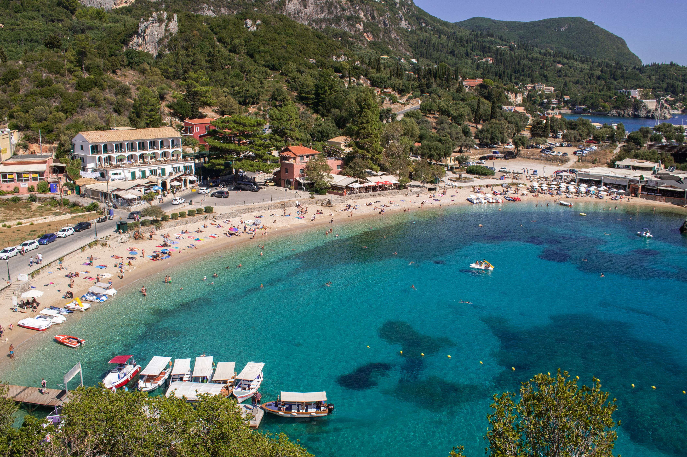

Το νησί μοιάζει να έχει να προσφέρει τα πάντα, από μία πανέμορφη Χώρα, άπειρες παραλίες και δρόμους που "φωνάζουν" ιστορία, μέχρι και μουσικό πολιτισμό, ιδιαίτερες γαστρονομικές γεύσεις και πολύ φιλόξενους ανθρώπους.
Δεν είναι τυχαίο ότι η Κέρκυρα είναι γνωστή ως «αρχόντισσα του Ιονίου», ούτε ότι αποτελεί μία από τις δημοφιλέστερες τουριστικές επιλογές στην Ελλάδα. Το νησί μοιάζει να έχει να προσφέρει τα πάντα, από μία πανέμορφη Χώρα, άπειρες παραλίες και δρόμους που «φωνάζουν» ιστορία, μέχρι και μουσικό πολιτισμό, ιδιαίτερες γαστρονομικές γεύσεις και πολύ φιλόξενους ανθρώπους. Το ιστορικό της κέντρο έχει ενταχθεί στα µνηµεία Παγκόσµιας Πολιτιστικής Κληρονοµιάς της Unesco. Το ορεινό βόρειο τµήµα της καταλαµβάνει ο Παντοκράτωρ, στις πλαγιές του οποίου είναι χτισµένη η Άνω Περίθεια, ο παλαιότερος οικισµός της Κέρκυρας. Στην άλλη άκρη του νησιού βρίσκεται η µοναδική λίµνη Κορισσίων, από τους σηµαντικότερους υδροβιότοπους του νησιού, με τη λιµνοθάλασσα και τους αμμόλοφους να συνδυάζονται µε ένα µοναδικό δάσος από σπάνιους κέδρους που συναντώνται αποκλειστικά σε αυτή την πλευρά της Μεσογείου.